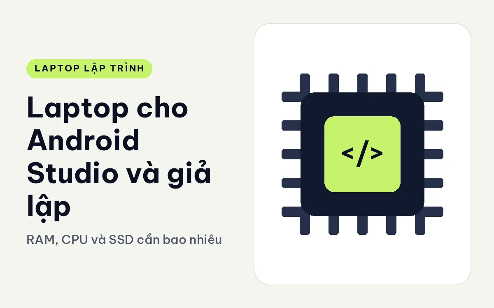
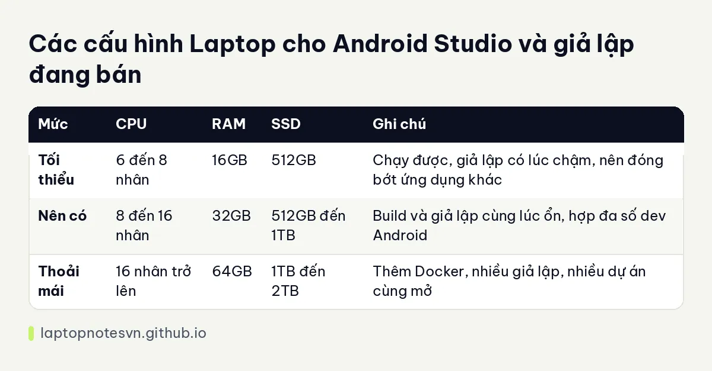

Laptop cho Android Studio và giả lập - RAM, CPU và SSD cần bao nhiêu

Android Studio là một trong những công cụ ngốn tài nguyên nhất trên máy cá nhân của dev. Một mình nó đã dùng nhiều bộ nhớ, rồi đến Gradle build, trình giả lập Android, trình duyệt mở tài liệu, và có khi cả Docker cho backend. Những thứ này chạy cùng lúc, và máy yếu sẽ bộc lộ ngay: build chậm, giả lập giật, quạt kêu suốt. Bài này nêu phần cứng cần quan tâm khi chọn laptop cho stack này.
CPU, RAM hay GPU quan trọng hơn
RAM là thứ quan trọng nhất. Android Studio, Gradle daemon và trình giả lập mỗi cái chiếm một phần lớn. Khi bộ nhớ hết, hệ điều hành đẩy dữ liệu ra ổ đĩa và mọi thứ chậm hẳn. Với dev chạy giả lập thường xuyên, 16GB là mức chật, 32GB là mức dùng thoải mái. Cách tính chi tiết hơn có trong bài lập trình viên cần bao nhiêu RAM.
CPU nhiều nhân giúp Gradle biên dịch song song. Mỗi lần build đầy đủ, nhiều nhân chia việc cho nhau. Chip 8 nhân là điểm bắt đầu hợp lý, chip 16 nhân cho bạn dư địa khi vừa build vừa chạy giả lập.
SSD nhanh và đủ chỗ quan trọng hơn người ta nghĩ. Mỗi phiên bản Android SDK, mỗi ảnh hệ thống của giả lập đều chiếm vài gigabyte, và thư mục cache Gradle phình ra theo thời gian. SSD 512GB dùng được nhưng sẽ đầy sau vài tháng nếu bạn thử nhiều phiên bản Android. Nên chọn 1TB nếu ngân sách cho phép.
Ảo hóa phần cứng là điều kiện để giả lập chạy nhanh. Hầu hết chip Intel Core Ultra hiện nay hỗ trợ, nhưng bạn cần bật trong BIOS nếu máy chưa bật sẵn.
Card đồ họa rời không bắt buộc. Giả lập vẫn chạy được bằng đồ họa tích hợp, chỉ là giao diện nặng sẽ kém mượt hơn. Card rời có ích nếu bạn làm thêm game hoặc ứng dụng đồ họa nặng.
Bảng RAM, CPU và SSD nên có
| Mức | CPU | RAM | SSD | Ghi chú |
|---|---|---|---|---|
| Tối thiểu | 6 đến 8 nhân | 16GB | 512GB | Chạy được, giả lập có lúc chậm, nên đóng bớt ứng dụng khác |
| Nên có | 8 đến 16 nhân | 32GB | 512GB đến 1TB | Build và giả lập cùng lúc ổn, hợp đa số dev Android |
| Thoải mái | 16 nhân trở lên | 64GB | 1TB đến 2TB | Thêm Docker, nhiều giả lập, nhiều dự án cùng mở |
Đây là khung tham khảo chứ không phải số đo, vì phần cứng cần tùy theo dự án. Dự án Compose nhỏ chạy nhẹ hơn nhiều so với ứng dụng lớn có hàng trăm module.

Chọn máy nào cho Android Studio và giả lập
Tôi chọn ba máy từ danh mục có cấu hình khớp với bảng trên.
ThinkPad T14 Gen 7 có hai bản đều 32GB RAM LPDDR5x 7467MHz dạng LPCAMM2, SSD 512GB Gen4, một bản Core Ultra 5 325 (8 nhân, 47 TOPS NPU) và một bản Core Ultra 7 355 (8 nhân, 49 TOPS NPU), đồ họa tích hợp, màn WUXGA. Máy nặng 1,29 kg, hợp dev Android cần máy gọn mà vẫn có 32GB.
Dell Pro Max 16 MC16250 có bản Core Ultra 7 255H 16 nhân, 32GB DDR5 5600MHz, SSD 1TB Gen4, đồ họa Arc 140T, màn 16 inch FHD+. Bản này nằm đúng mức nên có: 16 nhân cho Gradle, 1TB chứa nhiều ảnh hệ thống giả lập.
Dell Pro Max 16 Premium có bản Core Ultra 9 285H 16 nhân, 64GB LPDDR5x 8400MHz, SSD 1TB và card RTX PRO 2000 8GB, màn FHD+ IPS. Đây là mức thoải mái cho dev chạy nhiều giả lập hoặc kèm Docker, với giá phải chấp nhận là máy 16 inch nặng hơn.
Ghi chú riêng ở Pro Max 16 Premium cho lập trình.
Nếu ngân sách hẹp và dự án nhỏ, bản 16GB vẫn chạy được nhưng bạn sẽ phải kiểm soát việc mở bao nhiêu thứ cùng lúc.
Những việc nên làm sau khi nhận máy
Chỉnh bộ nhớ cho Android Studio. Mặc định IDE dùng một mức bộ nhớ khiêm tốn. Nếu máy có 32GB, bạn có thể tăng mức tối đa cho IDE và cho Gradle daemon trong cài đặt, nhưng đừng cấp quá nhiều để còn dư cho giả lập.
Bật ảo hóa. Kiểm tra trong BIOS và trong hệ điều hành xem tính năng ảo hóa đã bật. Nếu không, giả lập chạy rất chậm hoặc không chạy.
Dùng thiết bị thật khi có thể. Điện thoại thật qua cáp USB tiết kiệm RAM và CPU hơn giả lập, và cho kết quả sát thực tế. Giả lập vẫn cần cho việc thử nhiều cỡ màn hình và phiên bản Android.
Dọn cache định kỳ. Thư mục cache Gradle và ảnh hệ thống giả lập cũ tích lại. Xóa những phiên bản bạn không dùng để giữ SSD thoáng.
Chú ý nhiệt. Build lớn chạy nhiều phút khiến quạt lên tiếng. Đặt máy ở chỗ thoáng khí và đừng bịt khe tản nhiệt.
Thử máy trước khi mua. Nếu có thể, mở một dự án Android lớn của bạn trên máy mẫu và build thử. Đây là phép thử trung thực nhất, hơn cả bảng thông số.
Nếu bạn còn lưỡng lự giữa mức nên có và mức thoải mái, hãy xem công việc thật của mình: chỉ làm app đơn giản thì 32GB là đủ, làm app lớn kèm backend và Docker thì 64GB đáng tiền.
Đăng ngày 09/11/2026